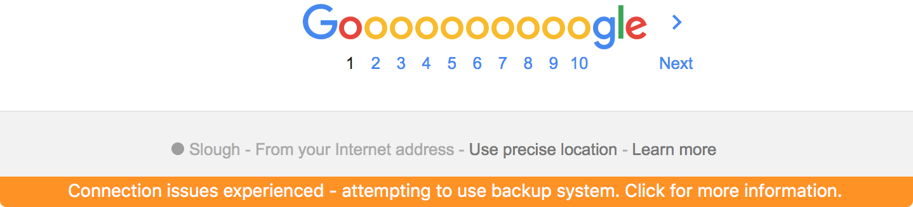

Submarine uses an intelligent algorithm to verify your access to our service. If the algorithm discovers a connection issue, Submarine will try and migrate your session onto a backup system which uses different connection characteristics. You may suffer a very short interruption in service whilst this takes places, indicated by an orange notification bar at the bottom of the window.
If the warning continues to appear and have internet access, there may be another issue. Please contact us.
